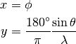

Bases: astropy.modeling.projections.Sky2PixProjection, astropy.modeling.projections.Cylindrical
CEA: Cylindrical equal area projection - sky to pixel.

| Parameters: | lam : float
|
|---|
Attributes Summary
| inverse | |
| lam | |
| param_names | tuple() -> empty tuple |
Methods Summary
| evaluate(phi, theta, lam) |
Attributes Documentation
Methods Documentation